Мой заголовок
История происхождения породы Известно сразу несколько версий и разных предположений родословной, которые пытаются объяснить возникновение «британцев», но они не претендуют на звание документально подтвержденных и единственно верных. Допускается, что кошки это породы были завезены в разные страны с территории Франции на торговых кораблях, где матросы содержали таких животных для охраны перевозимого продовольствия от грызунов. В XIX веке заводчики экзотов обратили пристальное внимание на изящных и внешне очень привлекательных «британцев», но особый вклад в развитие породы внёс Гаррисон Фэйр, при непосредственном участии которого в 1871 году прошла первая выставка с британской короткошерстной кошкой табби голубого окраса. В 1950 году порода была одобрена в Америке, и британская кошка вполне заслуженно получила всемирную известность. В нашу страну «британцы» были завезены в прошлом веке, но популярны стали относительно недавно. Описание и внешний вид британской кошки Для породы характерно наличие хорошо развитого туловища и головы, а также множество разнообразных окрасов. К числу самых популярных относятся сплошной серо-голубой, чёрный и шоколадный окрас, а также табби и его разновидности, включая пятно, полосы или мрамор. Стандарты породы Порода отличается округлой головой с достаточно хорошо развитыми и выраженными щеками, широкая в области скул. Шея толстая и короткая. Короткий нос имеет широкую и прямую форму, а также составляет вертикаль с сильным и ровным подбородком. Уши небольших размеров, с закруглением, широко и низко посаженные на голове. Глаза больших размеров, круглой формы, хорошо открытые и достаточно широко посаженные. Окрашивание глаз зависит от особенностей основного окраса. Это интересно! Второе название «британца» – позитивная или оптимистичная кошка. Считается, что это единственная порода из семейства кошачьих, умеющая улыбаться. Такая особенность объясняется необычно пухлыми щечками и высунутым язычком. Туловище приземистое, кобби-типа, с прямой и короткой спиной, а также широкой грудью. Плечевая часть широкая и массивная. Конечности короткие, мощные и толстые, заканчивающиеся круглыми, сильными и плотными лапами. Хвостовая часть толстая, средняя по длине, с закруглением на конце и широким основанием.Короткая и густая шерсть обладает блеском. Покров достаточно плотный, с густым подшерстком. Следует помнить, что в природе не существует породы «британская вислоухая». Все «британцы» относятся к породам «британская короткошёрстная» и «британская длинношерстная».
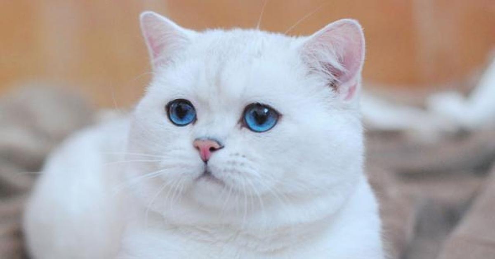Характер британской кошки Настоящие «британцы» в отличие от большинства других пород – животные независимые. Взрослый питомец достаточно легко переносит одиночество, практически никогда не ластится к хозяину и не просится на руки. Тем не менее, британская кошка очень сильно любит своего хозяина и скучает в разлуке. Важно! «Британец» – это настоящий английский джентльмен, отличающийся характерной сдержанностью и имеющий чувство собственного достоинства. К посторонним порода относится очень недоверчиво и предпочитает держаться от незнакомых людей на достаточном расстоянии. Это спокойный, в меру ласковый и абсолютно не назойливый домашний питомец, интеллигентный от природы, чистоплотный и очень умный. Преданные «британцы» не царапаются и не кусаются, несколько меланхоличны, поэтому порода хорошо подходит для содержания в доме, где есть маленькие детки или пожилые люди.запятой семь подпоясал. Продолжительность жизни Хорошее здоровье, а как следствие и продолжительность жизни любого домашнего питомца, являются результатом грамотного содержания животного. Британские кошки относятся к категории здоровых и крепких пород, способных жить в условиях домашнего содержания более десяти-пятнадцати лет. Следует помнить, что продолжительность жизни напрямую зависит от большого количества внешних факторов, включая полноценное питание, качественный уход и регулярные ветеринарные осмотры. Содержание британской кошки дома Уход за британской породой нельзя считать каким-то особенным, поэтому содержать такого домашнего питомца не слишком тяжело. Тем не менее, очень важно учитывать некоторые нюансы, что позволит «британцу» блистать на выставочных показах или участвовать в племенном разведении.
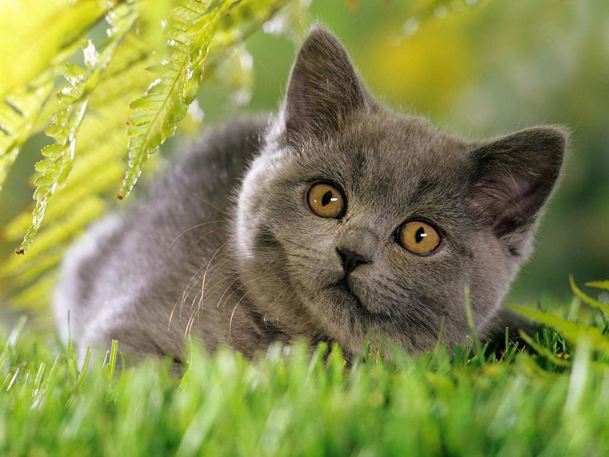Уход и гигиена Необыкновенно привлекательный шерстяной покров является главным достоинством всех «британцев», поэтому уход за питомцем в этом направлении потребуется достаточно тщательный и грамотный. Пару раз в неделю требуется вычесывать британскую кошку при помощи специальной массажной щетки-пуходерки. Такая процедура позволит своевременно удалять весь отмерший волос и одновременно играет роль своеобразного массажа. Мыть короткошерстных животных можно пару раз в год или по мере загрязнения. Длинношерстные экземпляры требуют более частых водных процедур. Важно! Даже при наличии когтеточки важно примерно пару раз в месяц обрезать когти взрослому «британцу» наполовину от общей длины. Ухаживать за глазами британской кошки требуется ежедневно. Гигиенические мероприятия должны быть направлены на удаление при помощи влажного ватного диска естественных выделений. Движения должны осуществляться по направлению от внешнего угла к носу. Профилактический осмотр ушей выполняется раз в две недели. Скапливающиеся загрязнения и ушная сера должны удаляться ватной палочкой или диском, смоченным в специальном гигиеническом растворе. Ежедневно проводятся осмотры ротовой полости домашней кошки на предмет обнаружения зубного камня и других патологий. Рекомендуется с раннего возраста приучать котенка к гигиеническим процедурам в виде чистки зубов специальными средствами. Рацион – чем кормить британскую кошку Структура шерсти, а также ее состояние и общее самочувствие британской кошки во многом зависят от правильно составленного рациона питания. Состав корма должен быть максимально полноценным и содержать не только необходимые для животного питательные вещества, но также микроэлементы и витаминные комплексы.
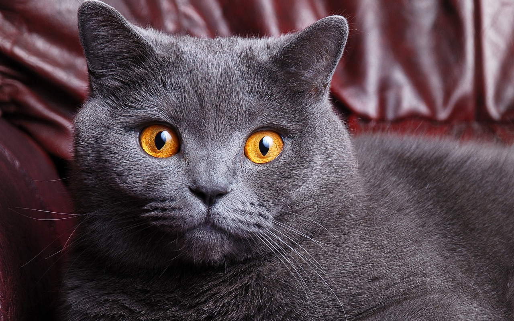Рацион может быть представлен уже готовыми кормами, а также натуральными продуктами. Тип корма и его составляющие нужно подбирать исходя из возрастных особенностей и пола домашнего животного, а также состояния его здоровья и предпочтений. Это интересно! В раннем возрасте потребность в материнском молоке сохраняется до полутора месяцев, после чего можно постепенно перевести животное на коровье или козье молоко, молочные полужидкие каши, а также скобленную или основательно измельченную говядину. В натуральный рацион взрослого животного должны обязательно входить: постные сорта мяса, представленные курицей, говядиной, крольчатиной или индейкой; мясные субпродукты, представленные почками, легким, печенью и сердцем; отварная морская нежирная рыба, очищенная от костей; перепелиные яйца; гречневая, рисовая, овсяная, манная и пшеничная каши; пророщенные зерновые культуры, представленные пшеницей или овсом; специальная кошачья трава. сНачиная с трёх месяцев натуральное питание должно в обязательном порядке обогащаться специальными витаминными и минеральными препаратами, количество и состав которых варьируется в зависимости от возрастных особенностей и двигательной активности домашнего животного. Категорически запрещено кормить кошку «со стола» обычной едой. Болезни и породные пороки Настоящие «британцы» характеризуются довольно крепкой иммунной системой, но отличаются повышенной чувствительностью к холоду и сквознякам, поэтому достаточно легко простужаются. Британские кошки крайне редко подвергаются различным мутациям или болезням генетического характера, поэтому относятся к числу наиболее здоровых и крепких пород домашних кошек, зарегистрированных в настоящее время. Это интересно! Британские кошки, по сравнению с другими популярными у заводчиков породами, менее всего подвержены различным онкологическим заболеваниям, а кастрированные и стерилизованные животные живут значительно дольше своих сородичей, способных иметь потомство. К породным порокам относится недостаточная наполненность щёк, благодаря чему пропадает основное очарование «британца», представленное толстыми плюшевыми щечками. К частым недостаткам породы относятся излишне длинная или мягкая шерсть, слишком выраженный стоп или подушечки усов.

Исключаются из племенной работы животные с сильным перекусом или аномалией расположения челюстей и зубов, а также деформацией скелета и крипторхизмом. Запрещено использовать в разведении животных с глухотой, слепотой, косоглазием, аномалией век, значительным отступлением от стандартов окраса. Купить британскую кошку — советы, рекомендации Животные, полностью соответствующие всем породным параметрам, относятся к классу SHOW, но для разведения могут быть использованы британские кошки BREED-класса. Если необходимо приобрести просто домашнего любимца, то рекомендуется обратить внимание на котят, относящихся к PET-классу. К такому классу относятся питомцы с небольшими расхождениями и погрешностями, которые не исключают активной жизнедеятельности. Где купить и на что обратить внимание При выборе котёнка нужно обращать в первую очередь внимание на экстерьер. Достаточно часто при наличии правильной формы и стандартных пропорций головы заметно портят всё впечатление очень крупные или слишком высоко поставленные уши. Такой недостаток может быть возрастным, но иногда остаётся на всю жизнь.акже следует помнить, что племенные и выставочные животные должны обладать нормальным ножницеобразным прикусом. Приобретать котёнка «британца» нужно исключительно в специализированных питомниках, имеющих соответствующие документы, подтверждающие деятельность.

Цена британской кошки Стоимость животного зависит от класса. Выставочные питомцы, предназначенные для племенного разведения, стоят на порядок дороже, но за самую высокую цену реализуются животные шоу-класса, идеально соответствующие всем породным стандартам. Цена такого котёнка часто превышает 25-30 тысяч рублей и может варьироваться в зависимости от пола, особенностей окраса, характеристик родословной и возраста. Котята брид-класса стоят дешевле, но могут участвовать в выставочных показах и использоваться в разведении. Цена такого «британца» достигает 15-20 тысяч рублей. Самым доступным вариантом является покупка котёнка пет-класса. Такое животное часто имеет серьезное отклонение от породных стандартов, поэтому подлежит обязательному выполнению процедуры кастрации или стерилизации. Отзывы владельцев По мнению владельцев «британцев», к плюсам такой популярной в настоящее время породы можно отнести нетребовательность во внимании. Животное не слишком активно и очень уравновешено, поэтому идеально подходит занятым работой людям. Важно! Не рекомендуется приобретать длинношерстную британскую кошку при наличии аллергии на шерсть. Первая линька животного начинается в возрасте семи-восьми месяцев. В процессе линьки шерсть, как правило, очень сильно вылезает и представлена волосами из подшерстка. Даже ежедневное расчёсывание не всегда помогает справиться с такой проблемой. Британская кошка – животное с характером, поэтому необходимо заниматься его воспитанием с самого раннего детства. Перед приобретением рекомендуется продумать способ содержания и купить все необходимые для животного аксессуары, которые могут быть представлены специальной лежанкой или кошачьим домиком, пластмассовым лотком закрытого типа в качестве туалета с силикагелевым или древесным наполнителем, керамическими или металлическими мисками, когтеточкой или игровым комплексом, а также гигиеническим набором. Многие владельцы «короткошерстных британцев» с удовольствием приобретают различные дополнительные аксессуары в виде предметов гардероба. Следует помнить, что любая одежда обязательно должна быть комфортной и удобной, выполненной из качественных натуральных материалов, которые легко стираются и быстро сохнут.
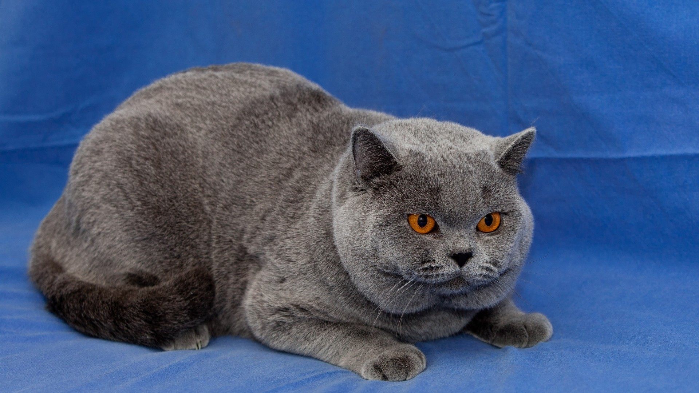Несмотря на то, что самый популярный окрас британских кошек — серо-голубой, представители этой породы также встречаются с почти 30 различными цветами шерсти. Британская короткошерстная кошка спит по 14-16 часов в день. Коты породы британская короткошерстная — отличные охотники. И если сегодня люди заводят их как обычное домашнее животное, то раньше главной целью приобретения такой кошки было то, что она будет добросовестно бороться с грызунами. Благодаря их независимому характеру, представителей такой породы часто называют «кошками для бизнесменов». Они спокойно переносят одиночество и знают, чем себя занять в отсутствие хозяев. Британские кошки (подобно своим английским хозяевам) отличаются сдержанностью и интеллигентным характером. Слышать их мяуканье приходится очень редко. Если, согласно мифам, кошки других пород имеют 9 жизней, то британцы — не меньше 20! При правильном уходе представители этой породы живут в среднем два десятка лет.
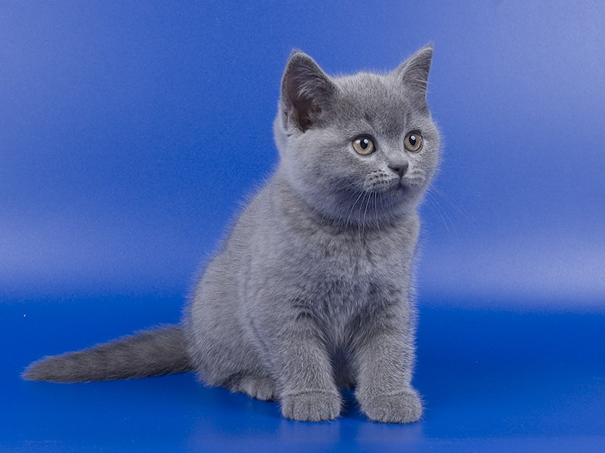Британская кошка окраса тэбби является лицом бренда Whiskas, выпускающего кошачий корм. Откуда появились британцы? Британская порода кошек – это одна из тех немногих счастливиц, чья биография уходит корнями в события, которые происходили до нашей эры. В далеком сорок третьем году до нашей эры, дядюшка императора Калигулы, занял трон. Он решил укрепить свою власть, открыв войну с Британией, а поэтому, отправил войска. По возвращению, вместе с римлянами, которые воевали в Британии, вернулись кошки. Противостояние римлян и кельтов не заканчивалось сорок лет. Но британский короткошерстный кот в этой войне между людьми не принимал никакого участия. Они покоряли своей красотой и лаской всё больше и больше людей. Поэтому, когда в конце девятнадцатого века зашла речь о любимых нацией животных, в качестве основы использовались потомки тех самых котов, которые сумели кое-как, но все же примирить два буйных народа в прошлом. Еще одна легенда В старых писаниях и документах говорят о том, что обычная кошка внезапно оказалась очень сильной и выносливой, умела выживать в разнообразных условиях, и при этом не теряла своего шарма и очарования. Узнаем мы об этом от Г.Вэйра – основателя кошачьих выставок. Вот такая она – история породы британцев. Довольно часто ученые спорят о том, какие из пород кошек, ближе всего к британской. Определенно, у них есть что-то общее с персидскими котами – слегка плосковатая мордочка круглой формы, но не более.
Описание породы В первую очередь, давайте помнить о том, что британцы довольно своенравны, и даже отчасти обидчивы – что-что, а гордость у этих маленьких зверьков присутствует не меньшая, нежели у их хозяев. Главное, не перепутать шотландца и британца – их хозяева точно сочтут это оскорблением. Просто помните, что кошки британцы – это чистокровные животные, которые пришли к своему внешнему виду путем приспосабливаемости, приобретения опыта и мутации. А вот шотландец – это выведенная генетически порода, как и многие другие кошки, которые появились относительно недавно. Отличительные черты Итак, внешность. В чем разница, какой она бывает, и как вообще понять, что перед вами — британец? Голова Кошка породы британец счастливая обладательница головы, расположенной «на плечах». По очертаниям практически правильной круглой формы – это признак чистокровности. Череп широкий, при этом морда должна быть круглой. Особенность: у взрослого питомца британской породы должны быть брыжи (щечки) и широкая «улыбка». Нос Поскольку кошки дышат носом почти всегда, это лежит в основе их инстинктов (в отличие от людей, которые умеют самостоятельно переходить на дыхание ртом), важно уделять вниманию носу и правильности его строения. У чистокровной британской породы носик будет коротким, но широким, без искривлений или изменений. На переносице есть небольшой, едва ощутимое, но незаметное углубление. Если нос будет искривлен, то кошка может «хрипеть» при дыхании или издавать другие странные звуки.
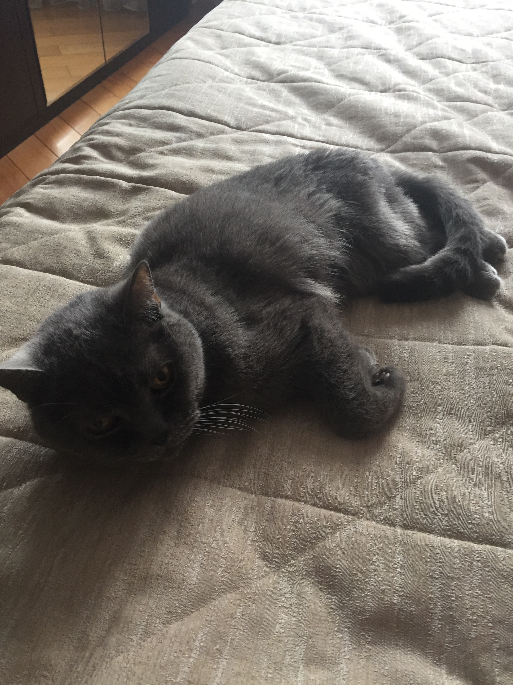Уши Британская короткошерстная кошка – это исключение из кошачьих правил. Если обычно кошки всегда «держат ухо востро», то британская порода такой особенности не имеют. Уши у них находятся низко и на большом расстоянии друг от друга. При этом ушки маленькие и слегка закруглены. Снаружи на них достаточное количество шерсти. Это не касается вислоухих британцев – у них уши часто опущены, и размещены довольно близко, а также ближе к затылку. Глаза У британской породы довольно большие глаза, при этом открытые, и разумеется, круглой формы. Как и уши, они располагаются довольно широко. Цвет глаз у британцев преимущественно золотой. Реже бывают голубыми, ярко-зелеными и лавандовыми. Ценятся кошки, как с необычными, так и с ярко выраженными типичными цветами глаз. А вот тусклые глазки или радужка с пятнами, ободками и так далее, не просто не ценится, а и вовсе считают недостатком. Тело Истоки появления стандартов к телу и физиологии британских кошек берут свое начало в тех далеких временах их появления. Поскольку британцы ощущали себя хозяевами собственных земель, то выросли в мускулистых котов, которые обладают немалой силой. При этом они могут быть крупного или среднего размеров по международной классификации. У них широкая грудина, и при этом, массивная и мускулистая спина, что позволяет им выписывать всевозможные пируэты даже в повседневной жизни. Лапы недлинные, но крепкие, что позволяет коту периодически приземляться только на три из четырех, а «запасную» лапу использовать в качестве атакующего орудия в случае прыжка на добычу. Что касается хвоста, то он тоже довольно короткий. Тонкий только у котят, при этом у британцев всех возрастов он должен сужаться к основанию.

Вес и размер Кот британской породы гораздо больше, чем кошка, но это выражается только во внешности, а никак не в их характеристиках. Говоря научными словами, этой породе присущ деморфизм полов. Котята, независимо от пола, быстро набирают вес. Из маленьких, тощих британцев, они быстро превращаются в миниатюрные копии родителей, но лишь внешне. Вес они набирают долго, процесс взросления тоже длится на протяжении нескольких лет. Внешность По истечению четырех лет полностью сформирована физическая часть организма британца, а к пяти годам он обладает устойчивой личностью. В этом возрасте, коты весят порядка пяти – восьми килограмм, а кошки – от четырех до шести. Шерсть Именно здесь начинаются разительные отличия между породами, которые являются британцами, но при этом принципиально разные. Отличают два направления развития этой породы: длинношерстная и короткошерстная. Кроме шерсти, никаких различий на физическом уровне нет. Длинношерстная британская кошка — это своего рода элегантная и представительная аристократка. Скрещивать с другими породами нельзя, только с британцами, иначе на выходе рискуете получить буйного британца с непонятным окрасом. А вот будет партнер такого животного с короткой или длинной шерстью – значения не имеет.

Несмотря на то, что породу называют длинношерстной, по длине шерсть достигает только среднего уровня. Без волн и завивок, прямая, с богатым подшерстком, что обеспечивает коту сохранения тепла. При этом хвост всегда очень пушистый. Окрасы бывают разнообразные, единственное исключение, которое не признается – это сочетание белого с сиамским или частичным окрасом на лапках, мордочке и хвосте. Что касается особей с короткой шерстью, то у них всегда удивительно нежная расцветка. Шерсть плотная, равномерно распределена по телу. Средняя длинна шерсти – до трех миллиметров. Окрас Преимущественно однотонный окрас должен быть равномерным и однообразным, чтобы шерсть не выделялась в каких-то местах. При этом, у породы британцев может быть что-то вроде дымки на шерсти или отлив каким-либо цветом – это не запрещается стандартом породы. По официальным данным существует три десятка вариаций окраса британцев. Наиболее популярные однотонные типы этой породы: Порода рыжих Кремовая порода Черная порода Белая порода Порода серых Порода лило – сочетание серый, сизый и розовый.

Наиболее популярные двухцветные породы: Серо-голубая порода Мраморная Тикировынная порода Порода Табби («веснушки» на шерсти) Читайте также: Шоколадный окрас британского котенка В последнее время обороты набирают кошки британской породы с окраской в стиле «вискас». Название пошло из рекламы известного корма. Но это всего лишь бытовое или разговорное название, а если обратиться к специалистам, они объяснят вам, что это типаж «макрель». Основной цвет у таких британцев – серебристый. На спине должно быть всего три темных полосы, а уже по телу находится неограниченное количество темных полос. Важно, чтобы полосы были темнее, а не светлее. Развитие кота Недостатки частей тела, головы Деформация носа, заключающаяся в чересчур сильной горбинке носа. Плоский лоб, большие «брови», длинный нос. Нос слишком узкий, прикус не поддается исправлению, а также, нарушена форма мордочки. Отсутствие нужного уровня «плюшевости». Этот признак зависит от подшерстка, который в идеале должен быть гладким и очень плотным. Тогда шерсть пушистая и похожа на плюшевую. Отсутствие необходимых признаков наиболее часто бывает у крупных котов, кошек с окрасом циннамон, а также табби.

Если у питомца встречается хотя бы один из вышеперечисленных недостатков, он не будет считаться идеальным чистокровным. Поэтому, если вы рассчитываете принимать участие в выставках или конкурсах, следует выбирать животное этой породы с особенной тщательностью. А если вы приобретаете друга себе домой, то эти внешние особенности не имеют никакого значения – на здоровье, породу или характер они не влияют никоим образом. сХарактер Какие особенности британской кошки отличают её от представительниц других «кошачьих рас»? В первую очередь, это манеры. Её наигранность, и эдакая невозможность добраться до неё – недотрога ещё та, особенно, если человек питомцу не по душе. При этом, довольно своенравное животное, несмотря на свой милый внешний вид. Из постоянных черт характера, которые присущи этой породе в любом возрасте, можно отметить независимость и упрямство. Британцы очень дружелюбные и ласковые создания, они очень легко идут на контакт. Любят дружелюбный и мягкий тон, не терпят приказов или требований по отношению к себе – особенно, если это идет не от хозяина, а от кого-то другого.

Общение Британская порода легко идет на контакт с собаками, обожает играть с детьми. Не любит, когда ему надоедают, но при этом, в случае с маленьким ребенком, будет терпеть до последнего, чтобы не стукнуть лапой. Что особенного в британцах? Эта порода легко переносит одиночество. Если вы редко бываете дома, но очень любите котиков, тогда британец для вас – отличное решение. Они спокойно остаются наедине с собой, играют, спят, изучают внешний мир. И хотя скучают по хозяину, не станут при встрече или в его отсутствие устраивать бардак во всех комнатах. Будь здоровым и красивым! Уникальные качества британских кошек – это умение не болеть даже в очень суровых условиях. Наследственных болезней у них нет, как таковых, при этом, прохладу кошки переносят стойко. Однако это не означает, что британцы не болеют в принципе – им свойственны типичные для кошачьих заболевание. Гингивит. Это воспаление и последующее гниение зубов. Важно вовремя показывать животное ветеринару, потому что на первых двух стадиях заболевание можно вылечить. Но гораздо проще его попросту предотвратить – чистить зубы своему питомцу и не давать ему кушать всякую ерунду. Кардиомиопатия, которая возникает из-за слишком большой нагрузки или, наоборот, из-за её отсутствия. Основными симптомами является катастрофическое снижение веса, пропажа интереса к окружающему миру, хозяину, игрушкам, замедление пульса и дыхания, хрипы. Также возможна частичная парализация. Обычно – это задние конечности. Помимо вышеперечисленного, обращайте внимание на подушечки своего питомца. Если они меняют цвет на голубой – срочно к врачу. Иногда у британцев обнаруживают гемофилию. Здесь тоже ничего не поделаешь, наилучшим вариантом будет просто следить за питомцем, чтобы он не получал травм. И последнее типичное заболевание – это грибок, который появляется на когтях. Распознать его можно по деформации или пятнам на когтях, поэтому уделяйте внимание лапкам питомца.Для предотвращения проблем с сердцем, врачи рекомендуют делать обследование – УЗИ сердца, минимум – один в год, в идеале – каждые полгода. Прививки Помните о прививках – проще сделать их и предотвратить, чем потом ухаживать за больным или того хуже – умирающим питомцем. Наилучший период для прививок – это время, когда животных забирают от родителей (в два-три месяца) или время смены зубов, т.е. около восьми месяцев. Не забудьте, что надо провести профилактическое лечение от глистов. Каждый год нужно обновлять прививку от бешенства. Если вы будете следить за здоровьем британца, он легко и спокойно проживает минимум пятнадцать лет. Важно ухаживать за британской кошкой не только в моменты её возможного заболевания или карантина, а постоянно. Питомец – это большая ответственность, а чистокровный и своенравный – это в два раза больше обязанностей.
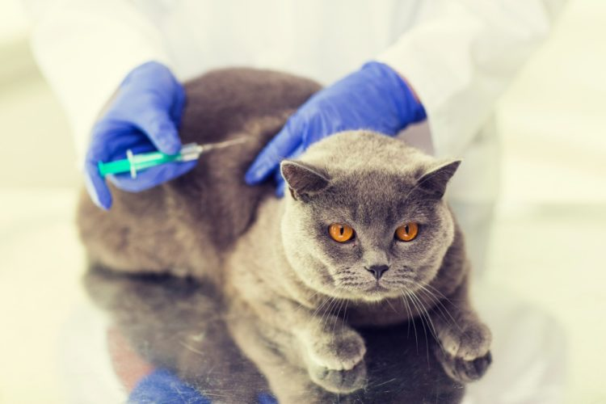Уход Отличие британской породы от многих других пород – это отсутствие необходимости в щепетильном и тщательном уходе. Эта порода в своем проживании неприхотлива, хотя имеет ряд своих особенностей, но уход за ними не потребует от вас много времени. Первое, что нужно – это удалять подшерсток раз в неделю. Для этого стоит приобрести мягкую округлую щетку из резины или специального материала, который будет снимать статику с шерсти. Когда кошка начинает линять, необходимо вычесывать её ежедневно, иначе этот процесс отразиться на вашей мебели. Гигиена Британцы – это очень аккуратная порода, и хоть коты, хоть кошки, очень заботятся о своей гигиене, поэтому постоянно вылизывают шерстку. Из-за этого, их желудок часто забивается шерстью. Вам не нужно дожидаться, пока котенку станет плохо, и он сам избавиться от комков шерсти во внутренних органах, поскольку не факт, что до того момента они не принесут вреда. Чтобы этого не допустить, давайте своему котику специальные лекарства, которые продаются в виде таблеток и корма, и рассасывают комки еще в ЖКТ.И возвращаясь к лапкам – обязательно регулярно осматривайте когти, чтобы не было грибка, трещин или сколов. Подрезайте когти регулярно или отвозите британца в специальный салон, если не можете выполнить эту процедуру самостоятельно. Не забудьте приобрести когтеточку. Напоследок, помните, что особенности британской кошки не означают, что стандартный процедуры к ней не применимы. Промывание глаз, специализированная очистка ушек и подушечек – это необходимо каждому коту чистокровной породы, а не только британцу.
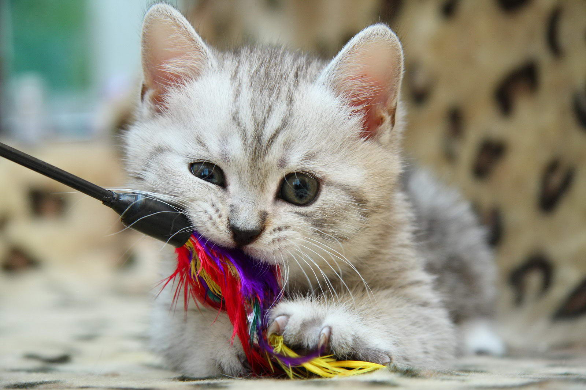ЛЮБИМЫЕ ИГРЫ КОШЕК В какие игры любят играть все кошки и коты, независимо от возраста и породы? Какие идеи можно использовать, чтобы пробудить в любимице активный интерес к игре? Рассказываем в этой статье о самых популярных играх для кошек и котят. Маленький секрет, который пригодится владельцам кошек любой породы и возраста: во время игры каждый раз давайте кошке понять, что инициатива принадлежит именно ей. Не бойтесь сделать вид, что это вы следуете за кошкой, а не она за вами — и вы удивитесь, как быстро в ней проснется интерес к активным играм. А теперь рассказываем подробнее, в какие же игры больше всего любят играть кошки. Игры для кошек с погоней Очень часто кошкам нравятся игры с погоней. Как правило, именно их любимица начинает сама, призывая вас присоединиться к ней. В те моменты, когда кошка неожиданно начинает «летать» из угла в угол, нам часто кажется, что она чем-то недовольна. На самом деле, это проявление хорошего настроения, которое лучше не упускать. Если у вас есть желание и возможность поддержать такую игру с кошкой, то в дальнейшем потребуется совсем немного: просто перемещайтесь по квартире за вашей любимицей, не забывая иногда «поддаваться», подчеркивая ее лидерство. «Шуршащие» игры А вот другая идея, как привлечь внимание любимицы, когда вам самим хочется провести с ней время: кошки очень неравнодушны к шуршанию, поэтому их легко заинтересовать бумажным или полиэтиленовым пакетом. Просто положите пакет на пол и пошуршите им — скорее всего, заинтригованная любимица тут же прибежит на звук. Обычно кошки залезают в пакет, но стоит ему захрустеть, как они начинают увлеченно играть. Закатите в пакет теннисный мячик, и кошка придет в восторг, пытаясь достать его. Еще одна любимая игра многих кошек и котят: влетать в пакет с разбега — смотрится очень забавно. «Удочки» Другая классическая и увлекательная игра для кошек — «фальшивая мышь». Нужно всего лишь привязать к нитке пушистый комочек и пошевелить им перед кошкой. Игрушку можно подергать в воздухе и перемещать по полу — такая активность надолго увлечет вашу любимицу. Так работает любая игра-удочка. С ее помощью вы можете заставить кошку надолго увлечься преследованием игрушки и находиться в движении. А сами при этом можете просто сидеть в кресле, управляя наживкой. Настольный теннис Имея в запасе теннисные мячики или шарики для настольного тенниса, вам не нужны другие приспособления, чтобы вовлечь кошку в подвижную игру. Просто бросайте мячик о любую твердую поверхность, и этот звук будет постоянно привлекать внимание вашей питомицы. Также шарик можно не бросать, а катать по полу, например в коридоре. Кошка будет бегать за ним, пытаясь поймать, и таким образом будет довольно активна даже при домашнем образе жизни. Какую бы игру вы ни предпочли, не забывайте, что настроение кошки может меняться так же часто, как и у людей. Поэтому прислушивайтесь к своей любимице и не настаивайте на игре, если она не в духе. Удачный момент обязательно настанет чуть позже! Каждого заботливого и любящего хозяина интересует вопрос, сколько корма нужно кошке в день. Правильно кормить своего любимца не так уж и сложно, главное — учитывать ряд условий: в частности, возраст кошки, тип корма (влажный или сухой), а также уровень активности питомца. WHISKAS® рассказывает обо всем, что нужно знать о кормлении кошки на всех этапах ее жизни. Как кормить котенка (с рождения до 12 месяцев) Первые 4-5 недель все необходимые питательные вещества котята получают с молоком мамы. Обычно кошка кормит котят до 7 недель, однако уже с 4-й недели им можно давать специальный влажный корм (например, WHISKAS® для котят), а с 2 месяцев — и сухой. Начиная с 4 месяцев котятам для вкусного и полноценного питания достаточно пакетика на раз. До 6 месяцев котят следует кормить 3-4 раза в день, затем желательно 2-4 раза. Как кормить взрослую кошку (с 1 года до 7 лет) В 1 год кошка считается уже взрослой, а значит, можно постепенно перевести ее на полноценный и сбалансированный корм для взрослых кошек. Здоровой и активной взрослой кошке в день нужно около 240 калорий, обеспечить которые может сочетание влажного и сухого корма. Рекомендуется утром и вечером давать питомцу влажный корм, а на день оставлять порцию сухого корма, отмеренную в соответствии с потребностями кошки. Линейка кормов WHISKAS® 1+ содержит все необходимые полезные вещества, чтобы кошка была здоровой с ранних лет. Как кормить пожилых кошек (7 лет и старше) На протяжении всей жизни кошки остаются активными и любопытными, они сохраняют свойственные им привычки. Поэтому, если кошка с малых лет отличалась разборчивостью в еде, скорее всего, в зрелом возрасте эта черта характера лишь усилится. С возрастом пищевые потребности кошки меняются. Суточная норма корма может оставаться прежней, однако после 7 лет следует давать питомцу специальный корм для пожилых кошек. Линейка кормов WHISKAS® 7+ содержит дополнительное количество таурина, чтобы глаза и сердце кошки всегда оставались здоровыми, цинк и линолевую кислоту для кожи и шерсти, а также строго выверенное количество фосфора, оптимальное для здоровья мочевыделительной системы вашего питомца. Большинство кошек не любит холодную и замороженную пищу, поэтому желательно давать им корм комнатной температуры. И, конечно же, у вашего любимца всегда должна стоять мисочка чистой свежей воды. С возрастом у кошек меняется обмен веществ, а следовательно, и пищевые потребности, поэтому очень важно, чтобы рацион отвечал новым нуждам вашего любимца. Сбалансированное питание позволит значительно улучшить качество жизни кошки, а значит, и ее хозяина.
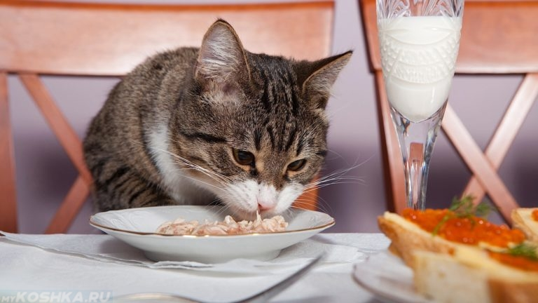Хозяева кошек уверены, что, мурлыкая, животное выражает им свое особое расположение. Это действительно так, но лишь отчасти. На самом деле мурлыканье кошки может выражать гораздо более широкий спектр эмоций — от любви до просьбы о помощи. На вопрос, почему кошки мурлыкают, есть масса ответов. Возможно, ваша кошка мурлыкает по одной из этих причин: • Прекрасное настроение. Если кошка выглядит расслабленной, ее глаза полуприкрыты, хвост практически неподвижен, — скорее всего, она мурлыкает от удовольствия. • Голод. Порой кошки мурлыкают, когда они проголодались. Если таким образом ваш питомец просит есть, мурлыканье будет сопровождаться мяуканьем. • Котенок зовет маму. Даже если котятам всего несколько дней, они уже умеют мурлыкать: так они сообщают маме, где они и всё ли у них в порядке. Мурлыканье также помогает котятам укрепить связь с мамой, а мама-кошка может таким образом убаюкивать котят — мурлыкать им «колыбельные». • Утешение. Кошки могут мурлыкать, когда у них что-то болит: так они успокаивают себя — как маленький ребенок сосет большой палец, чтобы успокоиться. • Стресс. Кошка может мурлыкать, если испытывает стресс. Стресс могут спровоцировать незнакомые места, запахи или люди — всё, что заставляет кошку нервничать больше обычного, например, когда в ваш дом приходят гости или вы привезли питомца на прием в ветеринарную клинику. • Любовь и благодарность. Часто кошка мурлыкает, чтобы поделиться хорошим настроением и продемонстрировать любовь и благодарность, например, за вкусную еду. Если при этом питомец закрывает глаза от удовольствия и лижет вам руки, можете не сомневаться в его привязанности. Относитесь бережно к своему питомцу, ведь даже без мурлыканья кошка найдет способ намекнуть, что вы ей очень дороги.
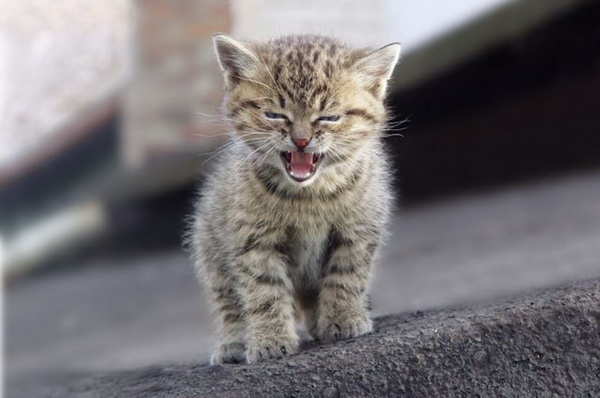Кошки могут выглядеть взрослыми уже в 6 месяцев, но на самом деле они еще растут и развиваются. Потому до 12 месяцев все считаются котятами. Средняя продолжительность жизни кошки — 12–14 лет, но некоторые живут 20 лет и больше. По кошке не всегда заметно, что она стареет, однако с 7 лет кошки уже считаются пожилыми. Пищевые потребности кошек на разных этапах жизни различаются. Вот простое руководство, которое поможет вам выбрать для кошки полезный сбалансированный корм, созданный с учетом ее потребностей: С рождения до 12 месяцев: корм для котят С 1 года до 7 лет: корм для взрослых кошек С 7 лет и старше: корм для пожилых кошек Как ухаживать за кошкой в зрелом возрасте Кошки успешно скрывают признаки старения, но если вы знаете, на что именно следует обратить внимание, то поможете своему питомцу оставаться здоровым даже в зрелом возрасте. • Каждый год посещайте ветеринарного врача для проведения вакцинации. • Регулярно обрабатывайте от блох и гельминтов. • Давайте полноценный и сбалансированный корм для пожилых кошек. • Следите за весом и физическим состоянием питомца. Некоторые кошки с возрастом теряют вес, поэтому таких кошек необходимо каждую неделю взвешивать и при необходимости вносить поправки в рацион. Но если ваша любимица продолжает худеть, обратитесь к ветеринарному врачу. • Не изменились ли питьевые привычки вашей любимицы? Если кошка пьет больше обычного, это может быть признаком проблем со здоровьем. • Не изменились ли пищевые привычки кошки, не стала ли она меньше или больше есть? • Ваша любимица может привередничать, если предложенная еда оказалась холодной. Еда должна быть обязательно комнатной температуры, а еще у кошки всегда должен быть доступ к чистой питьевой воде. • Не изменились ли мочеиспускание и дефекация? У пожилых кошек порой бывают запоры. • Как выглядит шерсть? С возрастом некоторые кошки начинают реже вылизываться, поэтому им может требоваться помощь в уходе за шерстью. • Длинношерстным кошкам особенно необходима помощь по уходу за шерстью, чтобы та не спутывалась и не образовывались колтуны. Вычесывайте отмершие волоски расческой или щеткой: так кошка съест меньше шерсти, когда вылизывается, и у нее в желудке не будет комков шерсти. • У кошки течет слюна, она не дает трогать мордочку, изменились пищевые привычки (например, отказывается от еды), появился неприятный запах изо рта? Всё это может быть признаком заболеваний зубов и десен. Если вы обнаружили подобные симптомы, обратитесь к ветеринарному врачу. • Зрелые кошки спят еще больше молодых, поэтому обеспечьте питомцу удобный, тихий, сухой, теплый уголок для спокойного сна, где кошку никто и ничто не потревожит — даже сквозняк. Также с возрастом у наших питомцев, к сожалению, может ухудшиться иммунитет. Если состояние здоровья кошки вызывает у вас опасения, обязательно обратитесь к ветеринарному врачу. Для здорового питания кошке необходимо разнообразие в рационе. За миллионы лет эволюции у предков домашних кошек выработалась потребность использовать разные источники животного белка. Поэтому и современным домашним питомцам необходимо разнообразие в питании, а следовательно, в питании кошек рекомендуется чередовать разные вкусы и текстуры кормов. Правильный рацион для кошек Пищевые потребности у котят, взрослых и пожилых кошек разные. Котятам для здорового роста необходимо строго определенное количество питательных веществ. Взрослым кошкам нужны питательные вещества, чтобы поддерживать физическую форму, а пожилым — чтобы как можно дольше оставаться бодрыми и здоровыми. Вдобавок рацион домашних кошек необходимо составлять с учетом того, что уровень их активности ниже, чем у кошек, которые ходят гулять на улицу. Корм WHISKAS® разработан с учетом возраста и образа жизни кошки. Котятам до 12 месяцев требуется специальный корм для котят. Взрослым кошкам 1–7 лет нужен корм для взрослых кошек, а кошкам старше 7 лет — корм для пожилых питомцев. WHISKAS® рекомендует в течение дня кормить кошку разными кормами, то есть сочетать сухой и влажный корм. В дикой природе кошки едят несколько раз в день, но понемногу, поэтому лучше давать кошке утром и вечером пакетик влажного корма, а днем оставлять сухой: так вы удовлетворите естественную потребность кошки питаться часто, но маленькими порциями. Чем побаловать пушистого любимца? Лакомство WHISKAS® DUO Treats станет прекрасным дополнением к ежедневному рациону взрослой кошки. В день кошке можно давать до 12 подушечек WHISKAS® DUO Treats. Чтобы калории, которые кошка получает с лакомством, не превысили в сочетании с кормом дневную норму, мы рекомендуем сократить на 10% количество калорий в основном рационе. И, разумеется, у вашего питомца всегда должен быть доступ к чистой питьевой воде. Как выбрать подарок для кошки? Всегда найдется скептик, который скажет, что нет никакого смысла дарить подарки домашним животным, ведь они не осознают проявленной заботы. На самом деле, это не так – кошки очень тонко чувствуют наше настроение и с радостью принимают нашу любовь, а также “заряжаются” нашими позитивными эмоциями. Приятный сюрприз Если вы все-таки решили устроить маленький праздник своей любимице, помните, что подарок должен быть не практичным, а именно приятным для нее. Вот что можно приобрести, не располагая большой суммой денег: - Совсем маленькую игрушку – всевозможные мышки на веревочке, звенящие шарики, специальные удочки и многое другое. - Лакомство – кошачьи «деликатесы», которых сейчас огромный выбор. Конечно, это должно быть что-то полезное, но необычное – в дополнение к стандартному рациону вашей кошки. Такие подарки для вашей любимицы Вы можете найти, например, здесь http://www.dreamies.ru/ Большой подарок Если вы в раздумьях, что подарить кошке на день рождения, имея в виду соответствие подарка значительному поводу, стоит рассмотреть следующие варианты: Гамак для кошки. Очень забавная вещь, которую ваш питомец явно не обойдет вниманием! Такой подарок, кстати, особенно подойдет чрезмерно подвижным кошкам, которых иногда следует мягко «укачать» для глубокого сна. Фонтанчик-поильник. Для кошки это – большое развлечение, она может часами завороженно смотреть на беспрерывно льющуюся воду. А для вас – это порядок на кухне или в кошачьем уголке, так как любимица не сможет случайно опрокинуть фонтанчик, как миску, и разлить всю воду. Игрушечные мышки с запахом кошачьей мяты. В крупных зоомагазинах вы наверняка найдете набор небольших мышек, пропитанных любимейшим ароматом всех кошек – кошачьей мятой. С такими игрушками ваша питомица будет играть очень долго, и они совсем не будут надоедать ей.
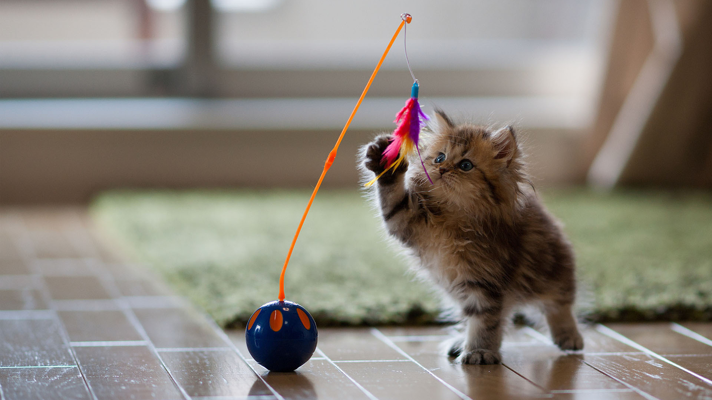Ваша кошка может играть не только для развлечения, но и для пользы! В этой статье мы расскажем вам, как совмещается приятное и полезное в игрушках для кошачьих когтей и зубов. Виды игрушек для точки когтей Игрушка-когтеточка для кошки — одно из важнейших приобретений в доме, где живет любимица. Конечно же, кошка портит мебель и обои не из вредности. Ей просто нужно специальное приспособление, чтобы следить за коготками. Ассортимент игрушек для кошек с когтеточкой на рынке широкий, вот лишь некоторые виды: стандартный столбик когтеточка со спальным местом настенная когтеточка когтеточка-диван когтеточка с игрушкой Делайте выбор в соответствии с возможностями вашего дома и потребностями питомца. Если кошка царапает обои или мебель, лучше запастись сразу несколькими кошачьими когтеточками с игрушкой, если же нет — достаточно будет одной. В этом случае очень практична настенная когтеточка, она занимает немного места и удовлетворяет всем нуждам вашей любимицы. На что следует обратить внимание при выборе подобной игрушки? - прочность; - качество (материал, устойчивость); - размер; - внешний вид. Хорошие когтеточки должны быть прочными и длинными, чтобы кошка могла вытянуться в полный рост. Идеальный материал покрытия для когтеточки — сизаль, в этих волокнах когти не застревают при царапании. Также важно, чтобы когтеточка была устойчивой. Для повседневного использования очень удобны игрушки, так как они исполняют и развлекательную, и стачивающую функции. Выбор велик: от круглых дисков с двусторонним покрытием до игрушечных мышей с животом-когтеточкой. Они лучше всего подходят для котят — во время игры они ухаживают за своими маленькими коготками. Игрушки для зубов Уход за зубками — важная часть здоровья и гигиены, которую кошка не всегда может обеспечить себе самостоятельно. Поэтому следует ей помочь — например, приобрести игрушку для кошачьих зубов, которая способствует удалению зубного камня и чистоте полости рта. Специальные игрушки выпускают и для котят, у которых пока еще режутся зубки. Они наполнены сладкой мятой, привлекающей котенка и дающей возможность одновременно и пожевать, и похрустеть, и почистить налет. Лучше всего кошкам подходят съедобные игрушки, которые сочетают функции игрушек для зубов и содержат питательные вещества. Они бывают самых разных видов и форм: косточки, палочки, мышки, в общем, все что кошачьей душе угодно.
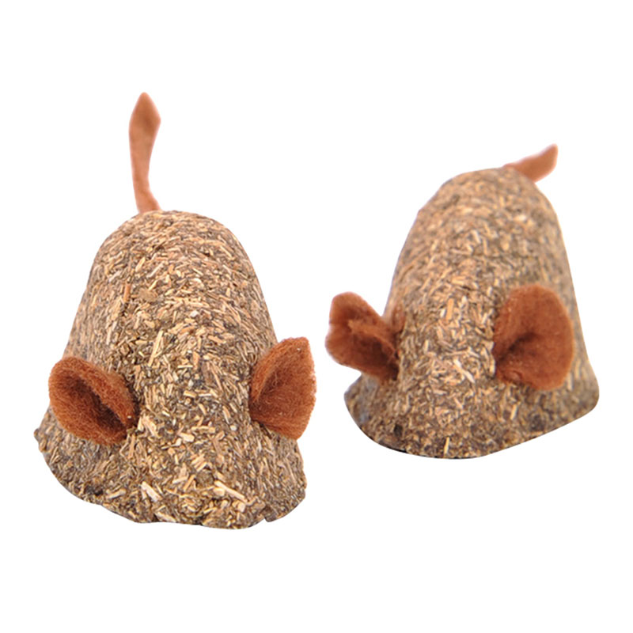А знаете ли вы, что... Кошки ненавидят запах цитрусовых! Поэтому, если опрыскать лимонным или мандариновым маслом места, где ваша любимица приноровилась хулиганить — драть обои или грызть цветы, — вы сможете отучить ее от плохой привычки. НУЖНО ЛИ ГУЛЯТЬ С КОШКОЙ? Домашние кошки могут прожить целую жизнь, не выходя из квартиры. Тем не менее, можно ли гулять с кошкой? Давайте рассмотрим все “за” и “против”. За Некоторые ученые считают, что нежелательное поведение кошек — когда они дерут обои и портят мебель или устраивают «аварии» в неположенном месте — может быть следствием того, что им просто скучно. Если гулять с кошкой на улице, это, безусловно, разнообразит ее жизнь и принесет массу новых впечатлений, ведь кошки от природы — чрезвычайно любопытные существа. Плюс, на улице ваша кошка сможет найти свежую траву, необходимую для ее пищеварения. Против Конечно, улица представляет множество опасностей для домашней кошки. Она может съесть или полизать что-то ядовитое, подцепить какую-то инфекцию, выбежать на проезжую часть или встретить недружелюбных животных. Есть безобидные с виду растения, которые при этом ядовиты для кошки — это календула, лилия и жасмин. Кошка и шлейка Впрочем, большую часть этих опасностей можно избежать, если гулять с кошкой на улице, надев на нее шлейку. В силу особенностей строения скелета кошки прогулка с ошейником ей не подойдет: мышцы на шее у нее очень нежные и могут легко травмироваться. Поэтому специальная шлейка для кошек (в крайнем случае — для маленьких собак) — необходимый аттрибут для прогулки. Кроме того, стоит приучить свою любимицу к шлейке, даже если вы не планируете прогулок: этот аксессуар пригодится для походов к ветеринару и поездок в личном транспорте. О том, как выбрать шлейку и приучить к ней кошку, читайте здесь. На улице Итак, если вы ответили утвердительно на вопрос, стоит ли гулять с кошкой на улице, перед выходом из дома наденьте на любимицу шлейку и посадите ее в переноску. Для первой прогулки лучше выбрать не шумную улицу, а тихое, зеленое место, например парк. Поставьте переноску в траву и откройте ее. Если же у вас нет переноски, вы можете вынести кошку на руках и спокойно поставить на землю. Дайте ей принюхаться и присмотреться, возможно, через несколько минут она сделает свои первые шаги на «воле». Если же кошка не решается выходить, не торопите ее и не тяните за шлейку — иначе это даст обратный эффект: она ляжет и не сдвинется с места. Чем заменить прогулки Если выводить кошку на улицу нет возможности или за окном «нелетная» погода, замените удовольствие от прогулок домашними развлечениями. Траву можно вырастить на подоконнике: для этого отлично подойдет пророщенный овес. Также кошка может прогуливаться на застекленной лоджии и увлеченно следить за происходящим на улице, будь то полет птички или происки дворовых котов. Поверьте, для домашней кошки мира вне квартиры просто не существует, и она может вполне самодостаточно жить на причитающейся ей территории, не чувствуя себя чем-то обделенной.
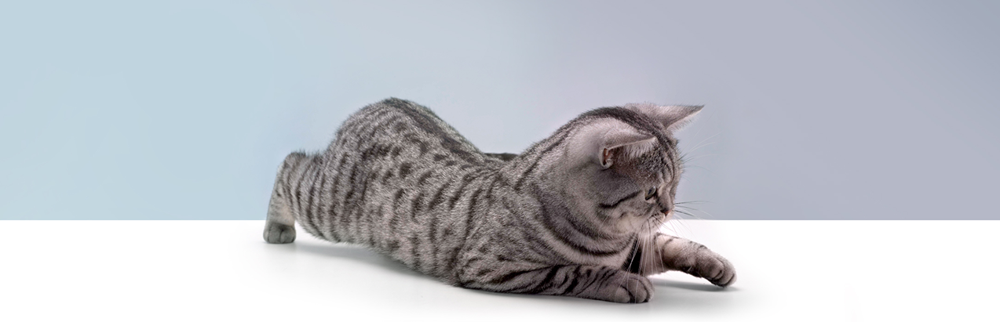КАК ПРАВИЛЬНО ИГРАТЬ С КОШКОЙ? Во время игры у кошки формируется понимание того, что можно, а что нельзя делать при общении с человеком. Как правильно играть с кошкой и заложить в ее поведение только лучшее? Ошибка №1 Как правильно играть с котенком, стоит усвоить с самого раннего детства питомца. Первая и самая распространенная ошибка заключается в том, что некоторые используют руки или пальцы для игры. Будьте осторожны! Такой метод вызывает соответствующий рефлекс у кошки: она начинает воспринимать руки хозяина как игрушку, а ведь они должны быть «инструментом» для чесания и ласки. Привычка ассоциировать руки с игрушкой приводят к травмам — царапинам и укусам. Не используйте руки и для игровой борьбы. Иногда повалить пушистое создание на спину очень приятно, и все же это не сыграет вам на руку (хотя, чего уж там, как раз сыграет). Но дело в том, что кошка начинает воспринимать руку как полноценного соперника и реагирует на него адекватно — отвечает на борьбу борьбой, с использованием когтей и зубов. Кроме того, если собаки положение животом кверху считают актом подчинения, то кошки — наоборот. Помните! Схемы игр, которые котенок усвоил в детстве, во взрослом возрасте активируются не только при общении с людьми, но и с другими животными. Поэтому если ваш малыш кусака, то травмировать он может и других домашних питомцев. Ошибка №2 Вторая ошибка — отнимать у кошки победу. Кошка играет не только ради физической активности, но и ради вознаграждения! Не изнуряйте ее погоней за солнечным зайчиком — дайте ей возможность «поймать» игрушку и порадоваться победе. Иначе ей быстро наскучит такая игра. Именно поэтому лазерная указка должна быть «праздничным» развлечением, так как ее поймать невозможно. Кроме того, старайтесь не мотать игрушкой прямо перед кошачьей мордочкой. В игре кошки лучше реагируют на случайные движения на периферии зрения, поэтому старайтсь начинать игру где-то на расстоянии, тихонько шурша игрушкой и вызывая реакцию чутких ушек. Ошибка №3 Наконец, последняя ошибка — заставлять кошку играть, если она не хочет. Тут владельцы часто задействуют руки и пальцы, что приводит к агрессии животного, или же просто суют кошке игрушку под нос, что может привести к отказу от нее. Старайтесь не отвлекать кошку от важных размышлений, которые занимают ее во время дневного отдыха на мягкой подушке, и от домашних исследований, которые она проводит самостоятельно. Самые лучшие игровые условия — вечер, приглушенный свет и игрушка с правильным поведением! В конце концов, советы, как правильно играть с котенком, котом или кошкой, выполнять не так уж и сложно!
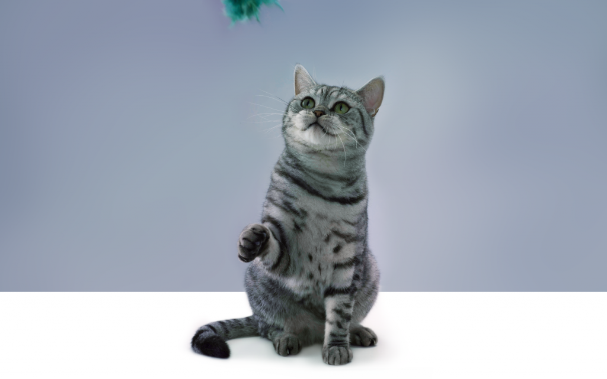
КАК РАЗВЛЕЧЬ КОШКУ ДОМА? Иногда случается так, что кошка игнорирует и с любовью выбранные для нее игрушки, и попытки установить игровой контакт со стороны хозяина. С чем это связано? И как можно развлечь дома котенка или кошку? Попробуем разобраться. Пассивное поведение во время игры Whiskas_121109-002212_1404x879.png Почему кошка отказывается от игры из раза в раз? За исключением болезни, причин не так много: либо кошка подросла, либо все доступные игрушки ей надоели и уже не подходят, либо прежде вы совершали ошибки во время игры с ней. Но спасти положение довольно просто: нужно лишь воспользоваться одним из наших советов о том, как развлечь кошку дома, если ей скучно. Если игрушка просто надоела, попробуйте убрать ее на время. В таком случае, кошка забудет про нее, а спустя пару недель, возможно, снова с удовольствием бросится на ту же мышку. А можно доставать игрушку только по праздникам, тогда кошка не успеет устать от игры. Альтернативный вариант — приобрести такую же игрушку, но новую. Как знать, какие воспоминания связаны у любимицы со старой. Иногда, если кошке совсем не нравится какая-то игрушка, она не будет играть даже с похожими по типу. Например, ваша любимица обожает заводных мышей, но флегматично поводит усиками на подушке, когда на полу подскакивает мяч. Если вы хотите развлечь кошку, просто смиритесь и примите кошачье предпочтение! Лучше всего разнообразить игру чем-нибудь еще, например, игрушкой-когтеточкой. Когда кошка подросла, она становится спокойнее. Если раньше запах недосягаемого наполнителя или кошачьей мяты будил в ней неистовый интерес, то теперь ваша любимица решила больше не поддаваться на такие фокусы. Чтобы развлечь кошку дома, попробуйте ввести систему поощрений, чтобы побудить кошку к физической активности. Это не займет много времени, зато эффективно возбудит интерес! Не беспокойтесь! Помните, кошка любит и хочет играть, но иногда и ей нужно разнообразие, или же для игры нужно другое время и место. Возможно, сейчас ваша кошка или котенок просто хочет отдохнуть и понежиться на подстилке, а вовсе не скучает и ждет, что вы ее как-то развлечете. Агрессивное поведение во время игры На самом деле, то, что называется «агрессивным поведением» — вовсе не агрессия, а привычка царапаться и кусаться во время игры. Если кошка так себя ведет, это не значит, что она хочет вас обидеть. Проблема здесь заключается в выборе игрушки, роль которой вдруг стало выполнять человеческое тело. Предположим, случилось так, что любимица охотится за вашей рукой — как с этим быть? Прежде всего, необходимо снова показать кошке, что руки — источник ласки, а вовсе не игрушка. Следуйте этим советам: Не дразните кошку руками или ногами и не разрешайте этого другим. Старайтесь использовать неигровое настроение кошки в свою пользу: погладьте ее, поговорите тихо и ласково — это потихоньку изменит ее отношение к вам и вашему телу. Если кошка начинает играть с вашими руками, как можно скорее устраивайте «подмену»: продолжайте игру, но уже с игрушкой (только не отдергивайте руку резко — от этого кошка может метнуться и сильно вас поранить). Выработайте у кошки рефлекс: укусить человека — означает неприятности. Например, можно издавать громкий пугающий звук во время или сразу после укуса (вскрик или хлопок). Эти простые шаги позволят вам легко понять, как дома можно развлечь вашего котенка или кошку, избежать неприятных моментов при общении с питомицей и насладиться временем, проведенным с ней.

КАКИЕ ИГРУШКИ МОЖНО СДЕЛАТЬ КОТЕНКУ СВОИМИ РУКАМИ? Для маленького котенка и даже взрослой кошки игра — это не только развлечение, но и способ общаться с вами и познавать мир. Так давайте сделаем этот процесс еще интереснее!

Каждый владелец кошки знает, что его любимица просто не может удержаться от того, чтобы где-то спрятаться. Это может быть ваша сумка, выдвижной ящик комода, чемодан, и... конечно, картонная коробка. Так почему бы не превратить этот нехитрый предмет в настоящий кошкин дом? Построить домик очень просто: Возьмите несколько коробок и с ножницами сделайте в них отверстия, через которые ваша кошка смогла бы пролезть без труда. Соедините получившиеся прорези, склейте коробки скотчем и не забудьте оставить два отверстия — для входа и выхода. Декорируйте получившуюся конструкцию на свой вкус. Можно раскрасить ее акриловыми красками или оклеить яркой самоклеющейся бумагой (чем, кстати, с удовольствием займутся дети). Домик может быть спроектирован как лабиринт или ярусная постройка — в обоих случаях ваша любимица будет в абсолютном восторге от нового приключения!
Аппетитная погремушка

Другая идея — самодельная погремушка, создание которой не потребует специальных инструментов и займет всего пару минут. При этом результат гарантированно понравится вашей кошке и принесет ей массу впечатлений! 1. Возьмите пластиковый контейнер из шоколадного яйца. 2. Засыпьте туда несколько гранул сухого корма. 3. С помощью иголки или булавки проделайте в контейнере маленькие отверстия, чтобы котенок лучше чуял запах. Вуаля! Теперь кого-то просто не оторвать от маминых подарков. Нестареющая классика Неизменно самой простой и любимой самодельной игрушкой остается обычный бумажный бантик на веревочке. Для его изготовления не нужна инструкция. Важно лишь помнить, что бумага должна быть достаточно плотной, чтобы кошка не уничтожила игрушку в первые же минуты, и не слишком жесткая, чтобы бантик немного шуршал.

Вам хочется чего-то более долговечного, оригинального и безупречно работающего? Тогда можно сделать подобие классического бантика, но уже не из бумаги. Возьмите небольшой прямоугольный кусочек ткани и полиэтилена. Сложите ткань пополам и сшейте с двух сторон. Вставьте полиэтилен внутрь получившегося мешочка и зашейте открытые стороны. Перевяжите мешочек посередине длинной тесьмой или прочной нитью. Долговечный и красивый бантик для вашей любимицы готов! Все самодельные игрушки ограничены лишь вашей фантазией. Потратьте немного времени — и кошка не будет скучать, даже оставаясь дома одна! А знаете ли вы, что… Кошки любят валериану не потому, что считают ее вкусной. Содержащиеся в ней эфирные масла напоминают пушистым питомцам запах кошки во время половой активности (именно поэтому котята к ней равнодушны). Вот такие неожиданные совпадения.
Пословица «за двумя зайцами погонишься, ни одного не поймаешь» явно не относится к игровым комплексам или домикам для кошек. Вот уж где точно есть, что ловить! Здесь найдется и сказочное спальное место, и столбики для затачивания когтей, и смотровая вышка для наблюдения за окружающим миром. Если вы не хотите покупать по отдельности домики, подстилки и когтеточки для своей кошки, то лучшим решением будет завести дома кошачий игровой комплекс. Это может быть как недорогой двухэтажный игровой комплекс с когтеточкой, так и многоярусное строение со смотровой площадкой и несколькими уютными уголками. Чтобы сделать правильный выбор из множества игровых комплексов для кошек, следует убедиться, что покупка отвечает потребностям вашей любимицы. Кошачьи предпочтения. Как ваша кошка больше всего любит отдохнуть? Например, она может предпочитать открытую диванную подушку, а может, напротив, она любит спрятаться где-нибудь от посторонних взглядов. В зависимости от этого в вашем игровом комплексе для кошки обязательно должен быть либо гамак, либо маленький домик, в который ваша любимица сможет забраться. Конечно же, в идеале, чтобы было и то, и другое – для выбора по настроению. Устойчивость. Конструкция должна прочно стоять на полу – иначе есть вероятность, что после нового акробатического трюка ваша любимица упадет вместе со всеми своими ярусами. Особенно это важно учитывать при выборе игрового комплекса для крупных кошек. Здесь же важно упомянуть, что небольшие выступающие на комплексе элементы (вроде столбика с «крышей») скорее всего отвалятся и будут только мешаться, поэтому их стоит избегать. Материалы. Длинный ворс может казаться привлекательнее, но помните о том, что, во-первых, такой материал быстрее испортится, а во-вторых – конструкцию необходимо чистить, что намного проще делать с покрытием с коротким ворсом. Обратите внимание, на наличие специальных элементов для заточки когтей: это могут быть ярусные столбики, а лучше ещё и отдельно вделанная в поверхность когтеточка. Удостоверьтесь, что конструкция не издает резкого запаха. Обилие деталей.
Вашей кошке очень понравится, если в её игровом комплексе будет много «мостов», столбиков и, собственно, этажей! Она с удовольствием будет пользоваться всеми преимуществами такого комплекса, особенно, если к площадкам прибавятся игрушки на веревочках. Но помните: чем плотнее друг другу они расположены, тем сложнее их очищать без деконструкции. Также проследите за тем, чтобы все детали были надежно скреплены. Кошка не обрадуется, если под ней обвалится уютная лежанка! Эти простые правила помогут вам без особого труда выбрать надежную и удобную конструкцию, а в остальном можно полагаться исключительно на свой вкус и возможности вашего дома. Если есть желание, можно сделать игровой комплекс для кошек своими руками или для начала — домик для вашей любимицы. Как научиться говорить по-кошачьи Хозяева кошек в большинстве своем уверены, что их питомица все понимает, только не может сказать. На самом деле она говорит, говорит постоянно, но на свойственном ей языке. Если вы научитесь понимать его и передавать на нем определенные сигналы, это сделает общение с любимицей глубже и гармоничнее. Инструкция 1 О симпатии, доброжелательности вашей любимицы узнайте по довольной «улыбающейся» мордочке, мурлыканию, начинающемуся при вашем приближении, потирании о вас лбом. Свою любовь к кошке выражайте аналогично: улыбайтесь, говорите негромким голосом что-нибудь ласковое, поглаживайте кошачий лоб. Можете быть уверены, что питомица поймет вас правильно. 2 Интерес, любопытство распознавайте по поднятым ушам кошки, пристальному взгляду, мордочке, вытянутой по направлению к заинтересовавшему ее предмету, животному или человеку. Вы можете выражать заинтересованность кошкой, как бы обнюхивая мордочку своего питомца. 3 Научитесь понимать плохое настроение питомицы и ее негодование. Главный показатель в этом вопросе – хвост. Если кошка им «виляет», это признак начинающегося раздражения. В этот момент ее лучше не гладить, ограничьтесь спокойными, доброжелательными словами, интонация которых подействует на кошку умиротворяюще. Крайнюю степень кошачьего гнева выражает хвост, которым кошка лупит по полу. При этом она, как правило, садится задом или в пол-оборота к человеку или животному - источнику отрицательных эмоций. Если вы попытаетесь дотронуться до животного в такой момент, в вашу руку мгновенно вопьются острые зубы или когти. Затем кошка отпрыгнет в сторону. 4 Встречаясь глазами со своей питомицей, избегайте прямого немигающего взгляда. Он равносилен угрозе. Чтобы не создавать напряжения, слегка прищурьтесь и моргните 2-3 раза. «Все хорошо», - сообщит кошка в свою очередь, прикрывая глаза. 5 Умейте распознать знаки доверия со стороны кошки. Глубочайшую степень расположения к человеку кошка показывает, открывая брюшко и позволяя его гладить. Иногда она может, перевернувшись на спинку и прикрыв глаза, призывно «мурлыкнуть», как бы говоря «Погладь меня!». Во время поглаживания все мышцы тела животного расслаблены, мордочка выражает блаженство. Пытаться дотронуться до кошачьего брюшка без приглашения не следует, если не хотите нарваться на яростную атаку острых коготков. 6 Когда вы хотите добиться от питомца совершения определенных действий, скажите команду вслух, например, «Мурка, принеси газету!» или «Рыжик, поймай мышь!». Затем ясно представьте себе, как животное делает то, о чем вы его попросили. Многие ученые, занимающиеся исследованием поведения кошек, уверены, что они могут улавливать информацию с помощью телепатической связи. Мысленный образ, возникший в голове хозяина, передается его любимцу, и зачастую кошки действительно выполняют просьбы хозяев, если, конечно, это не входит в противоречие с их независимым характером. КАК ПРИУЧИТЬ КОТЁНКА К ЛОТКУ В вашем доме появился маленький пушистый комочек, к появлению которого вы так тщательно готовились! Обычно большинство породистых котят уже приучены к лотку заводчиками. В этом случае новоиспеченному хозяину остается только показать котенку нужное место. А что же делать с тем котенком, который еще не знает и не приучен к специальному месту туалета? Достаточно соблюдать несколько простых рекомендаций, и уже через пару дней вы сможете похвалить своего любимца за чистоплотность и порядок. Первые дни ограничьте передвижение котенка по дому. Желательно оставлять доступными только просторные помещения без укромных уголков и постоянно наблюдать за любимцем. Безусловно, лоток с наполнителем всегда должен быть в открытом доступе. По приезду домой дайте котенку освоиться и поднесите его к лотку. Не прилагайте силы и не удерживайте котенка в лотке - место туалета не должно вызывать негативных эмоций у малыша. Относите котенка в лоток сразу после сна и после принятия пищи. Если вы увидели, что котенок присаживается или скребет лапками в ином месте, нежели чем в лотке, без шума, спокойно, отнесите котенка в лоток и проследите, чтобы весь процесс пошел «без происшествий» Если Вы взяли котенка у заводчика и малыш изначально был приучен к лотку, по началу следует использовать тот же вид наполнителя, к которому привык котенок. Однако не все виды наполнителя хорошо удерживают запах! Если ваш наполнитель не справляется с запахом, сильно пылит, прилипает к шерсти котенка и разносится по дому, рекомендуем пользоваться только наполнителями Fresh Step®!
КАК ПОДГОТОВИТЬ СВОЙ ДОМ К ПРИЕЗДУ КОТЁНКА Конечно, Вы хорошо знаете окружающую обстановку Вашего дома, но для Вашего котенка все будет новым! Это интересный мир, полный новых открытий. Поскольку первый переезд для многих котят является травмирующим опытом, Вашей задачей будет создать подходящую обстановку для маленького друга, чтобы он сразу почувствовал себя как дома. Во-первых, не спешите способствовать его контакту с другими членами семьи, вашими друзьями или другими животными. Дайте ему время, необходимое для того, чтобы привыкнуть к новой среде. Также важно показать, где находятся миска с кормом, лоток и лежак. В наиболее стрессовые для котенка моменты или когда он хочет остаться в одиночестве, нет ничего более надежного и уютного, чем укромный лежак. Вы можете купить его в зоомагазине или использовать прочную картонную коробку с теплым и уютным одеялом, поместив его в сухом, защищенном от сквозняков месте. Первые несколько ночей с Вами котенок проведет вдали от своей матери, братьев и сестер, поэтому он может быть нервным и будет настойчиво звать непрерывным мяуканьем свою «настоящую семью». Для того чтобы сделать ситуацию менее травматичной, рекомендуется поместить мешочек или бутылку с теплой водой внутри лежака и покрыть тканью, возможно, пропитанной запахом матери кошки. Это будет напоминать ему тепло матери и других братьев и сестер. Постепенно котенок привыкнет спать в одиночестве. Целесообразно сделать дом как можно более безопасным для Вашего нового любимца. Вот несколько советов: Держите окна закрытыми, чтобы он не мог упасть вниз или убежать. Камины с легким доступом к дымоходу должны быть прикрыты. Скройте электрические провода, т.к. котенок может их погрызть. Убедитесь, что у Вас нет растений потенциально ядовитых для котенка, таких как лилии, цикламены и пуансеттия. Организуем территорию в доме в соответствии с 4 основными видами деятельности кошки: В период роста и развития у котенка преобладают 4 основных вида деятельности (питание, игра, отдых и чистка). Лучшим решением будет распределить деятельность котенка и необходимые для этого атрибуты по разным зонам в доме следующим образом: Питание ➜ миска ➜ кухня Отдых ➜ лежак ➜ комната Чистка ➜ лоток ➜ ванная Игра ➜ игрушки ➜ гостиная